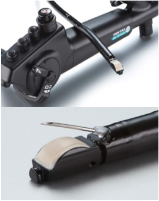
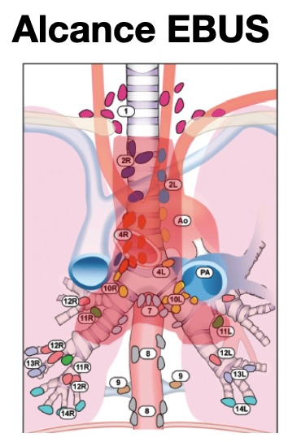
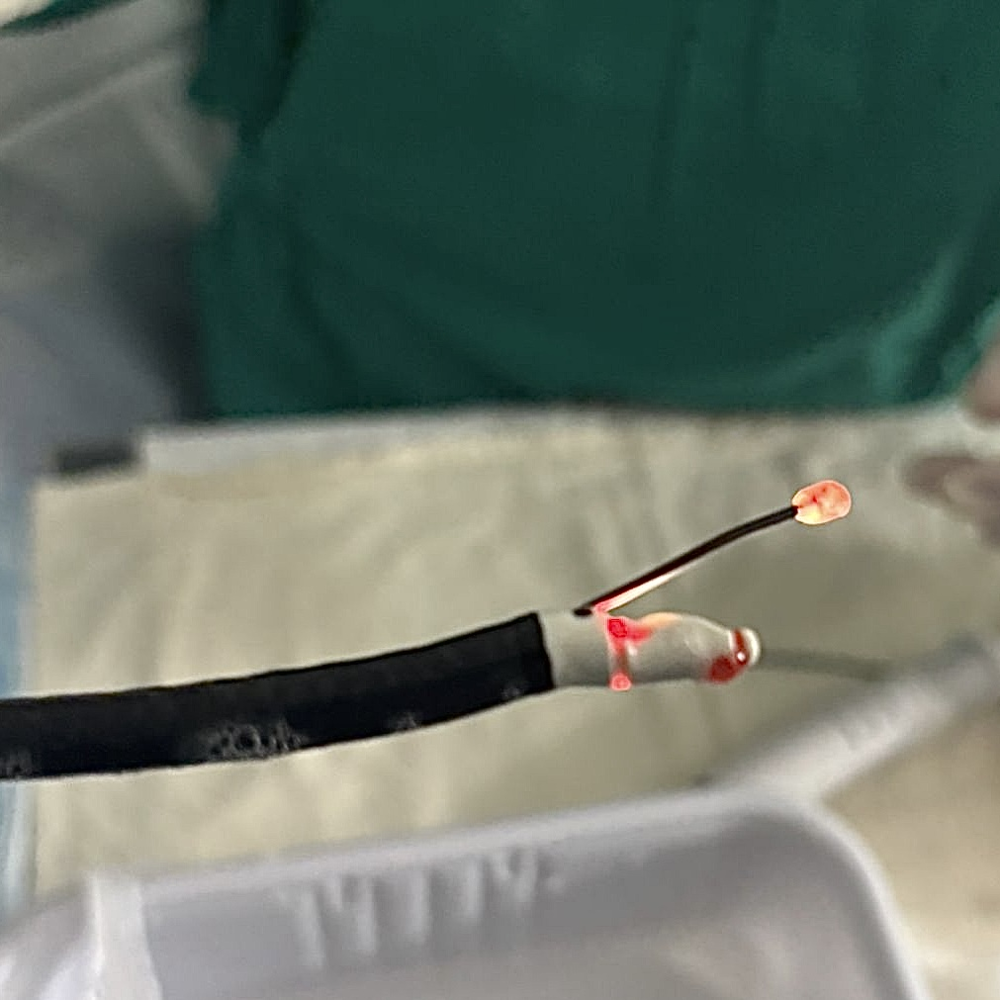

Endosonografía bronquial
¿Qué es el EBUS?
El EBUS (Endobronchial Ultrasound) es una técnica de broncoscopía avanzada que incorpora un transductor de ultrasonido al extremo del broncoscopio. Esto permite visualizar en tiempo real estructuras que están fuera de la vía aérea —especialmente los ganglios linfáticos del mediastino e hilio— y obtener biopsias dirigidas sin necesidad de cirugía.
Equipo
- Broncoscopio
- 6,5 mm de diámetro en la punta
- Transductor
- Convexo 7,5–13 MHz
- Óptica
- Visión 0°/25°/45° · campo 100°
- Canal de trabajo
- 2,0–2,2 mm · extremo angulado 20°

Estaciones linfonodales alcanzadas
- 2R / 2L — Paratraqueal superior
- 4R / 4L — Paratraqueal inferior
- 7 — Subcarinal
- 10R / 10L — Hiliares
- 11R / 11L — Interlobar
- 12R / 12L — Lobar
- Masas hiliares y paraesofágicas
- Lesiones mediastínicas adyacentes

A diferencia de la mediastinoscopía, el EBUS es un procedimiento ambulatorio, sin incisión quirúrgica, con retorno domiciliario el mismo día. Las guías internacionales (ACCP, ERS/ESTS) lo posicionan como la técnica de primera línea para estadificación mediastínica del cáncer pulmonar.
Técnica estándar
EBUS-TBNA
El EBUS-TBNA (Transbronchial Needle Aspiration) combina la visión ecográfica en tiempo real con una aguja de 22G que punciona el ganglio bajo control ultrasonográfico continuo. Es el estándar de referencia para estadificación linfonodal del carcinoma pulmonar no células pequeñas (CPCNP) y primera línea en el estudio de masas mediastínicas.
Indicaciones principales
| Indicación | Objetivo |
|---|---|
| Estadificación mediastínica CPCNP | Confirmar o descartar compromiso ganglionar N2/N3 antes de cirugía o quimioterapia |
| Adenopatías mediastínicas de causa desconocida | Diagnóstico diferencial: neoplasia, sarcoidosis, TBC, linfoma |
| Masas paratraqueales / hiliares | Biopsia de lesiones adyacentes a la vía aérea sin toracotomía |
| Reestadificación post-neoadyuvancia | Evaluación de respuesta ganglionar tras quimio o radioterapia |
| Secuenciación genética (NGS) | Obtención de material para perfil molecular en cáncer pulmonar avanzado |
Limitación del EBUS-TBNA convencional: la aguja de 22G obtiene material citológico / microhistológico. En condiciones donde se requiere arquitectura tisular preservada —linfomas, sarcoidosis, enfermedades raras mediastínicas— el rendimiento cae a 54–82%. Esta limitación es precisamente la que CryoEBUS supera de forma significativa.
Innovación tecnológica
CryoEBUS: la criosonda
CryoEBUS incorpora una criosonda de 1,1 mm al sistema EBUS. Bajo guía ecográfica en tiempo real, la sonda avanza hasta el ganglio y aplica frío extremo mediante el efecto Joule-Thomson (expansión de CO₂ a −40°C). El tejido se congela y adhiere a la punta, extrayendo una muestra histológica completa con arquitectura tisular preservada. El procedimiento se realiza en sala de broncoscopía, bajo la misma sedación moderada que el EBUS convencional.

Aguja 22G
Punciona el ganglio y aspira células. Obtiene material citológico o microhistológico. Tamaño de muestra: 0,20 ± 0,08 cm. Rendimiento global: 54–82%. Insuficiente en linfomas y enfermedades granulomatosas.
Congelación + extracción
La criosonda congela el tejido y lo extrae en bloque. Obtiene muestra histológica con arquitectura preservada. Tamaño de muestra: 0,46 ± 0,13 cm (p<0,001). Rendimiento global: 95–96%. Diagnóstica en linfomas, sarcoidosis y tumores raros.
Ventajas específicas del CryoEBUS
-
Muestra histológica completa con arquitectura tisular preservada: esencial para inmunohistoquímica, NGS y diagnóstico de linfomas.
-
Muestra 2,3× más grande (0,46 cm vs 0,20 cm, p<0,001): menos punciones necesarias, mayor cantidad de material disponible.
-
Rendimiento 96% en diagnóstico global, versus 82% del TBNA (Ariza-Prota 2023, n=50). En linfomas: 100% vs 0%.
-
Diagnóstico en segunda línea: de 17 pacientes con TBNA no diagnóstico previo, CryoEBUS fue diagnóstico en 16 (94%) (Poletti 2024).
-
Sin complicaciones mayores: no se reportó neumomediastino, neumotórax ni sangrado significativo en series publicadas (n=98 procedimientos).
-
Ambulatorio: mismo contexto que broncoscopía convencional, sin necesidad de quirófano ni hospitalización.
Literatura científica
Evidencia científica
Los datos publicados muestran una superioridad consistente de CryoEBUS sobre EBUS-TBNA convencional, especialmente en condiciones que requieren muestra histológica con arquitectura preservada.
| Parámetro | EBUS-TBNA | CryoEBUS | |
|---|---|---|---|
| Rendimiento diagnóstico global | 82–54% | 95–96% | ↑ CryoEBUS |
| Sensibilidad | 60,7% | 92,9% | ↑ CryoEBUS |
| Especificidad | 100% | 100% | — |
| Tamaño de muestra (cm) | 0,20 ± 0,08 | 0,46 ± 0,13 | p<0,001 |
| Linfomas | 0% | 100% | ↑ CryoEBUS |
| Sarcoidosis | 78,5% | 92,8% | ↑ CryoEBUS |
| Enfermedades mediastínicas raras | 0% | 100% | ↑ CryoEBUS |
| Complicaciones mayores | 0% | 0% | — |
Ariza-Prota M et al.
Estudio prospectivo. EBUS-TBNA y CryoEBUS realizados en el mismo paciente y estación ganglionar. Rendimiento 96% vs 82% (p=0,006). Tamaño de muestra significativamente mayor con criosonda.
Poletti V et al.
Estudio retrospectivo observacional. Rendimiento global de EBUS-TMC (CryoEBUS) 95,8% vs 54,1% del TBNA. Especialmente superior en linfomas (100% vs 0%), enfermedades raras (100% vs 0%) y linfadenopatía hiperplástica (100% vs 0%).